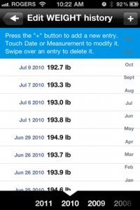
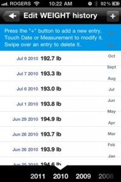

Antes de navidades ya os anticipamos en varios artículos la aparición de nuevas alternativas para Netflix en España. Una de ellas era Voddler, un servicio de video bajo demanda . Un servicio que hemos podido probar a fondo en su beta (os regalamos invitaciones para que lo probarais también) y el cual nos ha dejado muy buen sabor de boca.
Bien, pues hoy ha llegado el momento de que se haga su presentación oficial en nuestro país, con muchas novedades sorprendentes que nos han hecho apreciar aun más este servicio. Y no es para menos, ya que casi no se han dejado ningún detalle por pulir y ya podemos disfrutar de una experiencia con catálogo más ámplio, aplicación móvil para todas las plataformas y algunas cosas más que nos han explicado en su rueda de prensa.
Desde hoy Voddler es abierto en España, acaba su fase beta y retira la necesidad de acceder mediante invitación. Además cabe destacar que es el primer país en el que Voddler abre fuera de Escandinavia.
Una de las pegas que os contábamos en el artículo donde analizábamos los diferentes servicios de vídeo bajo demanda, era la ausencia de muchas series y películas, en parte por contar con un modesto catálogo, y en parte por la falta de acuerdos con diferentes distribuidores y demás. De manos de los directivos de Voddler, que se han encargado de contarnos las novedades hemos podido saber de nuevos acuerdos con distribuidores que nos traerán series y películas prácticamente de estreno. Una noticia que potenciará aún más si cabe el servicio.
Voddler llega a España con un con un catálogo de lanzamiento que incluye 600 títulos e irá creciendo durante los próximos meses hasta alcanzar su catálogo estándar de 5000 títulos. Cuenta con el apoyo de Warner Bros, Disney, Universal, Sony Pictures y Paramount, además de haber firmado en España acuerdos con los principales distribuidores nacionales e internacionales, así que Voddler promete tener un catálogo por fin competitivo en nuestro país. Esperemos que así sea, porque como ya hemos dicho más de una vez, esta es la característica que de verdad hace falta.
Por supuesto se lanzan dos opciones básicas para estos servicios, la posibilidad de ver películas que hemos comprado de modo offline y la visualización en HD, necesidades importantísimas para tener una auténtica alternativa a Netflix. Porque al final es de lo que se trata y en el que todos estos servicios se fijan.
Y no se podían olvidar del sector de los móviles, en los que también tendrá presencia Voddler, con aplicación para Android, iPhone y Windows Phone. De hecho, la aplicación estará disponible para toda la gama Lumia de Nokia tras haber alcanzado un acuerdo para distribuir su aplicación en exclusiva en estos terminales, aunque esto no llegará hasta mediados de Abril.
Curiosamente las aplicaciones para las que no se ha llegado a un acuerdo concreto como es el caso de Nokia ya están disponibles. Las versiones de Android, iPad, iPhone, Symbia y Meego ya se pueden descargar. Es posible que no os funcionen o no las podáis descargar todavía, las irán ativando a lo largo del día.
Las formas de pago
Aquí es donde llegamos a un punto realmente importante, lo que vamos a pagar a cambio. Voddler lanza en España con dos modelos diferentes. Podemos alquilar películas sueltas por un precio que ronda los 2.5€, pero Voddler, siguiendo el modelo sueco de Spotify, tiene la posibilidad de ver películas sin pagar ni un euro gracias a la subvención publicitaria. Todo esto está muy bien pensado para películas, pero como tengamos que pagar 2€ por episodio cuando el catálogo de estas llegue (ahora es nulo), la cosa no va a ir nada bien. Aunque poder series a través de Voddler de forma gratuita con un anuncio de 4 minutos antes de cada episodio sería una auténtica pasada.
Por supuesto no todos los títulos estarán disponibles gratis con publicidad, sería imposible. Voddler quiere apostar por disponibilidad, es donde se quiere hacer fuerte. Que las películas lleguen a su sistema lo antes posible, y lógicamente eso sólo será posible pagando por el contenido.
Volvemos a lo mismo de siempre en España. El servicio está genial, tenemos aplicaciones para todos los sistemas operativos móviles y estamos muy emocionados. Pero mientras el catálogo no sea excelente (y sólo vale si es excelente), Voddler no funcionará. Estos días habrá que analizar detenidamente lo que ofrecen, y veremos si realmente merece la pena. Si tiene las suficientes películas para ti, Voddler te va a encantar, porque funciona bien y es un gran servicio. Si no tiene un catálogo que te convenza… lo habéis intentado, pero no nos sirve.
¿Qué te parece Voddler? ¿Pagarías por su servicio?
Voddler
 |
 |


 
